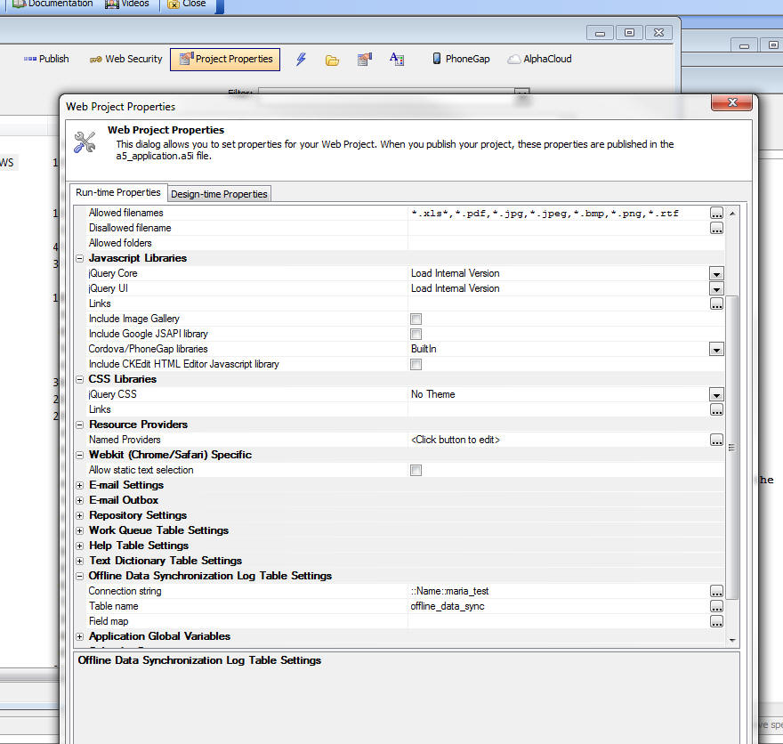

This document describes the updates and fixes made to Alpha Anywhere since its initial release.
To see the 'What's New in V12' document (which describes all of the new features in Alpha Anywhere's initial release) please click here.
Please note that Alpha Anywhere patches are only available to users with
a current subscription.
You can verify your subscription status from within Alpha Anywhere by
going to Help, About, or by clicking this link shown here (https://activation.alphasoftware.com/subscriptionStatus.aspx).
If you install an update for which your subscription is not entitled,
you will need to uninstall the update and rollback to an older version
that you are authorized to use in order to continue using Alpha
Anywhere.
In addition to the official updates that Alpha Software makes available from time to time (which are described in this document), we also make available our internal pre-release builds that allow you to see what features have been added and what bugs have been fixed since the last official update. The features and bug fixes in the pre-release build will be part of the next official update. To see the pre-release notes, please click here.
| UX Component | Hiding/Showing/Enabling/Disabling Buttons in a Button List Control |
You can use Javascript to dynamically hide,
show, enable and disable buttons in a Button
List control on a UX component. You can also
dynamically add and remove buttons from the
Button List. In this video we show the Javascript to dynamically alter the Button List. Watch Video Download Component Date added: 2015-01-30 |
Web Applications - Publishing Using FTP - CURL - When you publish your web application to an ISP, your publishing profile will typically specify that the method for publishing the files is FTP.
You then have the option of using either the built-in FTP features in Alpha Anywhere, or using an external FTP client.
If you choose to use the built-in FTP features in Alpha Anywhere, you now have a new option of using CURL FTP. Unlike the standard FTP feature in Alpha Anywhere (which uses Active mode), the CURL FTP option supports passive mode. Passive move is more reliable as is has enhanced error checking and error messages.
NOTE: Some FTP servers require passive mode and will not support the standard built-in Alpha Anywhere FTP features, which use active mode. In this case you must use the CURL FTP option.
To select the CURL option, check the 'FTP Publish with CURL' property in the Profile Editor dialog.

Passive mode FTP is slower than active mode FTP, especially when uploading a lot of files, rather than one large zipped file. Therefore it is recommended that you only use the CURL FTP option when using the 'InternalOptimized' option (which zips all of the files to be published into a single zip file).
UX Component - List Control - Disconnected Data Entry - Preventing Duplicate Records when Connectivity is Lost - When you are working with disconnected data in a List control there is a small possibility of a synchronization request being submitted to the server more than once - resulting in the possibility of duplicate records in the database.
To understand how this might happen, consider what happens when the user clicks the 'Synchronize' button on a device to synchronize edits that were made while offline.
Obviously, in order for the server to receive the synchronization request, the user must have a connection. But suppose that AFTER the user sends a synchronization request to the server, but BEFORE the server completes the work and can send a response back to the client, the client looses connectivity.
The server will continue processing the updates to the server and will do all of the synchronization requests contained in the package sent from the client. The server does not know that the client is now offline and so, after it completes all of the work, it will send a response to client indicating which rows were successfully synchronized. However, since the client is now offline, the client will not receive this message from the server. This means that all of the rows on the client that were edited are still marked as 'dirty' (even though the server has successfully applied all of the edits).
Now assume that the client gets its connection back and the user clicks the 'Synchronize' button again. The client will send a JSON package to the server and this package will include all of the updates that were previously sent to the server.
In order to protect against this possibility, a special server-side log can be used to prevent synchronization commands from being executed more than once.
In order to turn on the server-side synchronization log, edit the List control and on the Detail View pane, check the Use server-side synchronization log table property.

Before you can check this property however, you must first define the setting for the Synchronization Log Table. To define these settings, click the Project Properties button when the Web Projects Control Panel has focus.
Scroll to the Offline Data Synchronization Log Table Settings section and set the properties for the table. You can map this table to an existing table in your SQL database or Alpha Anywhere can create a new table for you with the correct table structure.

UX Component - List Control - Dynamic Images - Client-Side - Fixed an issue with dynamic, client-side images in a List control. Image did not display correctly after data in the List had been edited.
Grid Component - Linked Grids - Detail View - New Record - If a child Grid was linked to a parent Grid, when going to the new record in the child Grid's Detail View, the linking fields in the Detail View were not filled in with the linking values as they should have been.
Reports - Native SQL - Dynamic Filter at Runtime - If a report was based on native SQL, rather than portable SQL, then if you tried to apply a dynamic run-time SQL filter to the report, the dynamic filter was ignored. Now, the dynamic filter will be added to the native SQL query for the report. However, because this may be combining a native SQL query with a portable dynamic filter, there is no guarantee that the resulting SQL statement will execute correctly.
Video Finder - A bug was introduced in the previous update that prevented the Video Finder from opening.